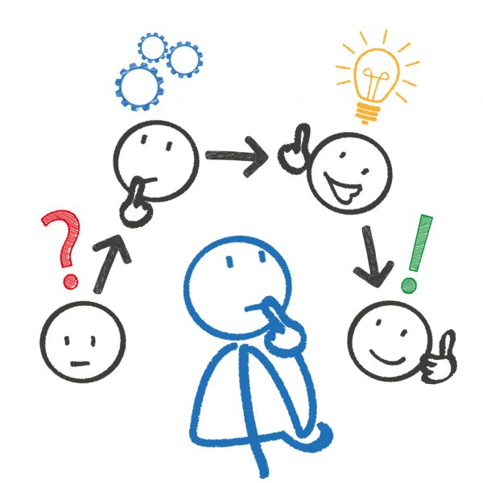

Idegenerering
Vi startede i skolen, hvor vi mødtes i grupperne. Vi fik et ekstra medlem, og blev sat igang med en form
for "kick-off"
Hvor vi havde en masse opgaver og data. Formålet med denne øvelse var at få inspiration til vores
projekt.
Efter øvelsen begyndte vi på at planlægge hvordan vi ville arbejde, og hvordan vi ville holde styr på
alle de opgaver der ville komme med projektet,
så vi blev enige om at bruge et kanban-board på trello. Vi er i Forming fasen nu.
Da vi skulle til at vurdere hvordan vores visualisering skulle se ud, lavede vi en ide-generering
session,
hvor vi brainstormet en masse forskellige ideer og koncepter.
Imens vi gjorde dette sketched vi på et stykke papir for, nemmere, at kunne visualisere de ideer og
koncepter der kom på bordet.
Da vi alle kendte hinanden i forvejen, kan man sige vores forming fase, er meget kortere end den faktisk
ville være ude i arbejds markedet,
så vi bevægede os allerede da vi brainstormede over mod storming fasen.
Vi sætter deadline til hvornår ideen skal være klar, og deadlinen bliver overholdt.
Med lidt hjælp fra Mads finder vi den rigtige vinkel til vores problemstilling og vi ender ud med
"Hvordan påvirker mine spisevaner miljøet?"

kanban-board
Vi kører et fast kanban board så vi løbende kan overvåge vores aktive, blokerede og færdige opgaver.
På boardet har vi også en to-do som viser de opgaver vi er blevet enige om skal laves på dagen,
samt en backlog som viser de større generelle opgaver der skal nås i løbet af projektperioden.
Vi har et daily standup møde hvor vi diskuterer hvilke opgaver der skal trækkes over i to-do fra
backloggen.
På denne måde holder vi løbende styr på hvad vi skal lave i dag, og hvad vi mener vi kan nå.
Her kigger vi også på backloggen og vurderer om der skal skrives flere opgaver på den,
samtidig med at vi evaluerer på den foregående dags arbejde.

Målgruppe
Hvis vi tager overproduktion som vinkel kan beskeden rettes mod forbrugerne, deres spisevaner skal fx
ændres, sådan at de sænker forbruget og produktionen.
Vi har foretaget nogle antagelser om fx producenterne, der siger, at de ikke vil ændre på produktionen så
længe forespørgslen stadig forbliver som den er.
Derfor lægger ansvaret hos forbrugerne, det er deres livsstilsændringer der kan lede til fremtidig
forbedring af miljøet og mindskning af overproduktion.
Vi har en ide om at lave en interaktiv og ændrende visualisering af en forbrugers CO2 udledning som
resultat af deres spisevaner. Dette gør visualiseringen mere direkte og personlig.
Fokus er på forbrugere der er interesseret i at vide hvordan deres forbrug påvirker miljøet, og dertil
har vi 2 Personaer.